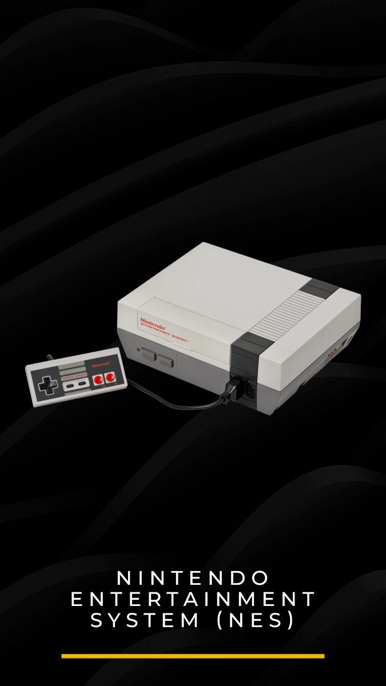
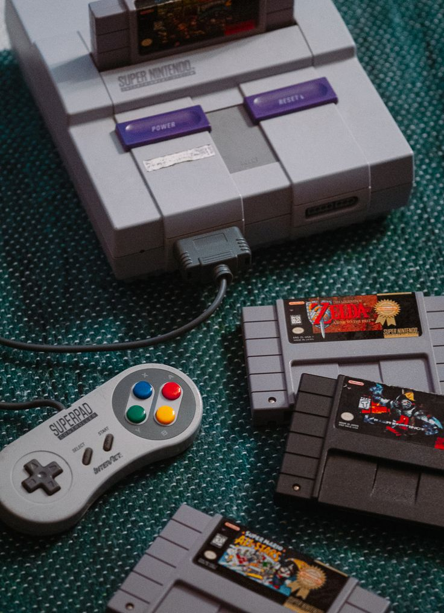
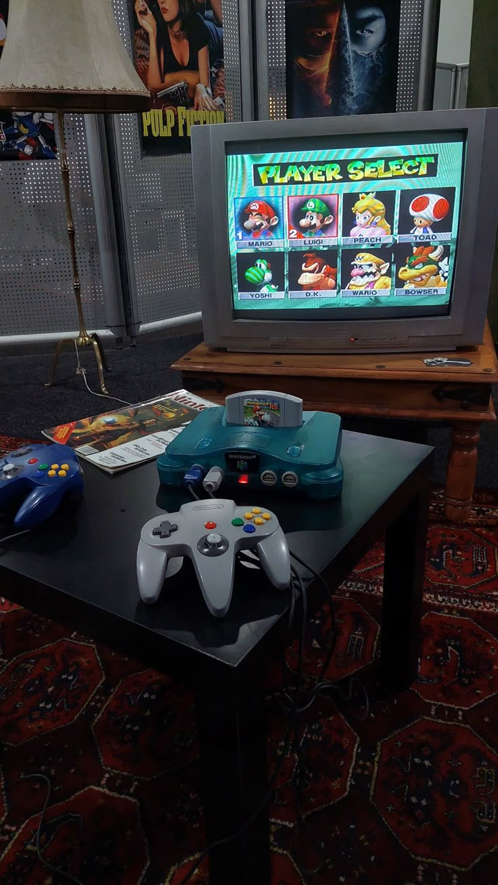
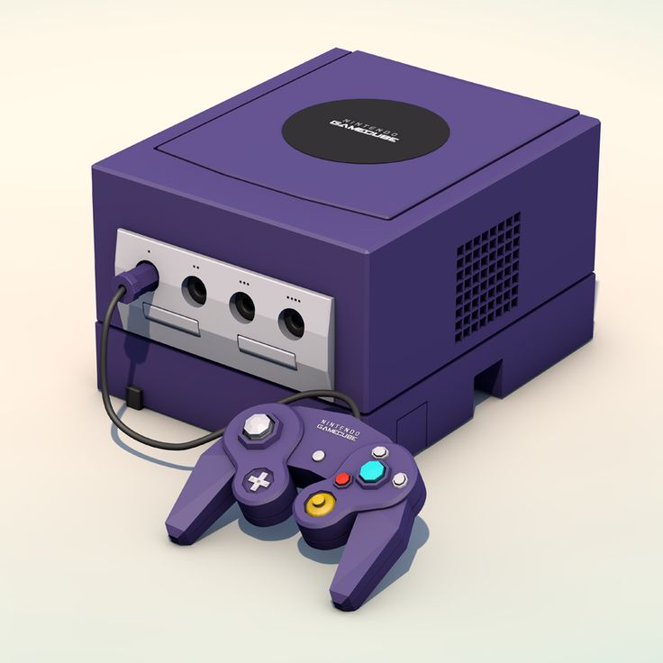
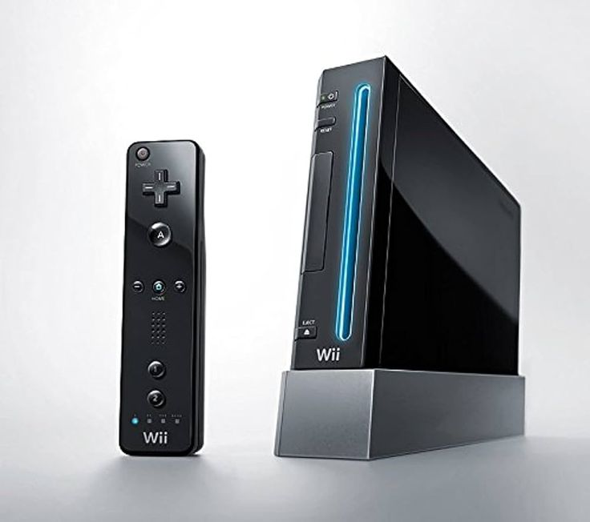
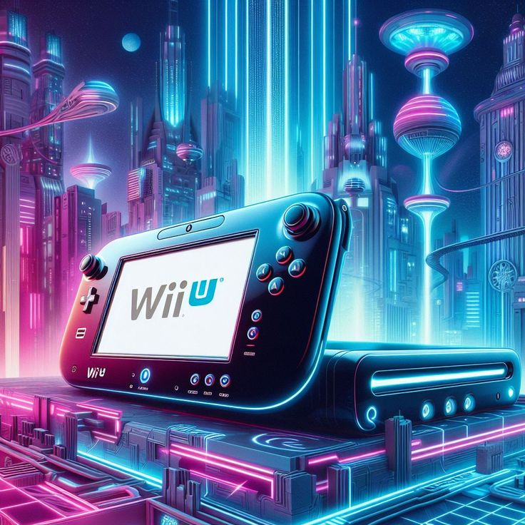
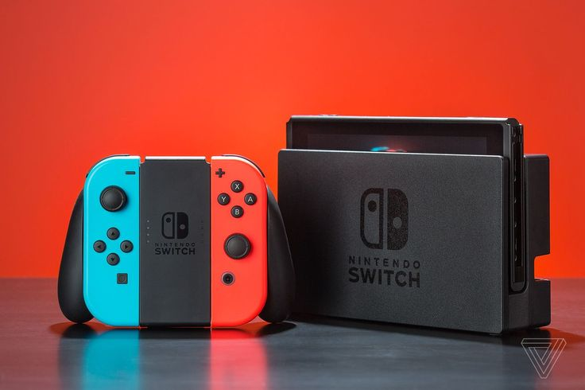
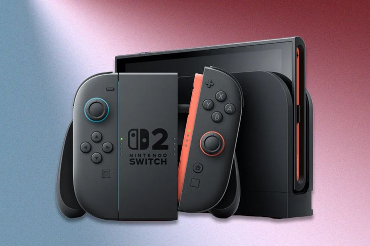

NES (1983)
O Nintendo Entertainment System foi o console de 8 bits que revitalizou a indústria após a grande crise dos games de 1983. Ele apresentou ao mundo ícones imortais como Mario e Link, estabelecendo as bases do design de jogos modernos e salvando o mercado doméstico de entretenimento. É considerado o ponto de partida para a dominação global da Nintendo.

Super Nintendo (1990)
A evolução para os 16 bits trouxe gráficos e sons aprimorados, consolidando franquias icônicas em uma era de ouro. O SNES é lembrado por sua biblioteca vasta e pela famosa "guerra dos consoles" contra a Sega, elevando o nível de competitividade tecnológica e criatividade na indústria. Foi aqui que títulos como Super Mario World definiram o gênero plataforma.

Nintendo 64 (1996)
Marcou a revolução definitiva do 3D real e dos mundos abertos. Com o poder de processamento de 64 bits e o controle analógico inovador, títulos como Super Mario 64 e Zelda: Ocarina of Time mudaram para sempre a forma como exploramos ambientes virtuais em três dimensões. Foi um marco de engenharia para a época.

GameCube (2001)
O primeiro console da Nintendo a utilizar mídias ópticas, focando em alto poder de hardware em um formato compacto e único. Foi a casa de títulos experimentais e clássicos cult como Metroid Prime e Super Smash Bros. Melee, focando intensamente na experiência de processamento e performance.

Wii (2006)
Um fenômeno global que introduziu os controles de movimento através do sensor infravermelho. O Wii resolveu focar na acessibilidade e diversão em grupo, atraindo um público totalmente novo (incluindo idosos e crianças) para o universo dos videogames com o sucesso avassalador de Wii Sports.

Wii U (2012)
Introduziu o conceito de segunda tela com o GamePad, permitindo novas formas de interação entre o controle e a TV. Embora tenha tido vendas modestas, serviu de ponte tecnológica essencial para o desenvolvimento do conceito híbrido que veríamos a seguir. Muitas de suas inovações de software foram aperfeiçoadas no sucessor.

Nintendo Switch (2017)
O console híbrido definitivo que une portabilidade com a experiência de mesa. Ele permite que você jogue títulos de alta performance onde e quando quiser, tornando-se um dos maiores sucessos de hardware e vendas da história da marca. É a casa de obras-primas como Breath of the Wild.

Nintendo Switch 2 (Futuro)
A aguardada próxima geração da Nintendo. Promete elevar o conceito híbrido com um hardware significativamente mais potente, suporte a tecnologias modernas de upscaling e retrocompatibilidade. A expectativa é que mantenha a tradição de inovação disruptiva que é a marca registrada da empresa.